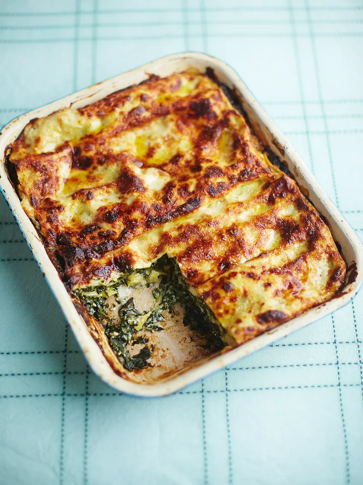

Lasagna with spinach

Description
This spinach lasagna is layers of noodles, sauteed spinach, marinara sauce and three different kinds of cheese, all baked to golden brown perfection. A hearty vegetarian main course option that’s perfect for feeding a large group.
You can never go wrong with a cheesy baked pasta, some of my favorite renditions include chili mac, buffalo chicken pasta, and this lasagna loaded with plenty of spinach and cheese.
Ingredients
- 70 g unsalted butter
- 50 g plain flour
- 800 ml milk
- 1 fresh bay leaf
- 800 g spinach
- 200 g ricotta cheese
- 1 whole nutmeg , for grating
- 300 g fresh lasagne sheets
- 100 g Parmesan cheese
Method
- Preheat the oven to 190°C/375°F/gas 5.
- Melt 50g of the butter in a pan and whisk in the flour. Cook for 1 to 2 minutes, then whisk in the milk till smooth.
- Season with sea salt and freshly ground black pepper, add the bay leaf and simmer for 5 minutes. Turn off the heat.
- Remove the stalks from the spinach, then wilt with the remaining 20g butter in a covered pan.
When wilted, drain, then, when cool enough to handle, squeeze out the liquid.
- Chop the spinach and mix with the ricotta, a ladleful of the white sauce and a good grating of nutmeg. Season.
- In a baking dish, layer the lasagne sheets, white sauce, spinach mixture and a grating of Parmesan.
- Finish with a layer of pasta topped with sauce and more Parmesan.
- Bake for 30 minutes, or till golden.
Return to main page